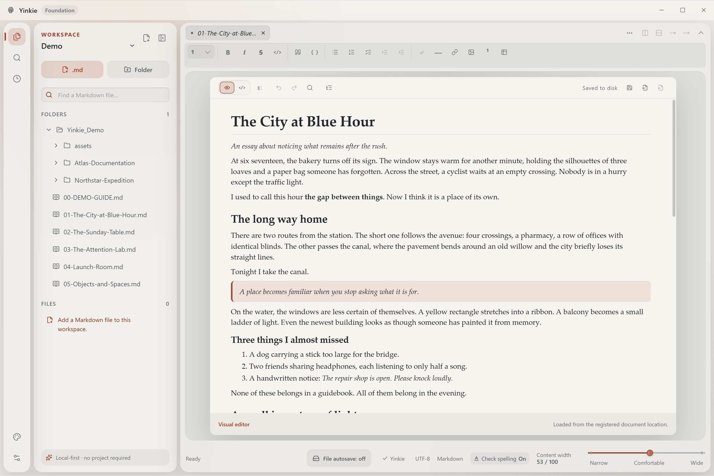
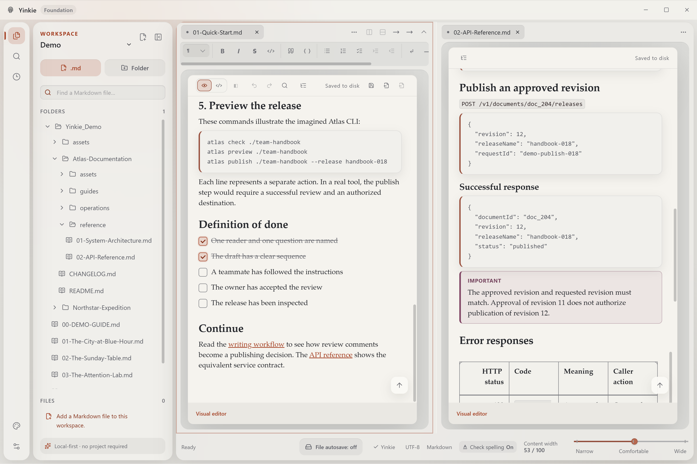
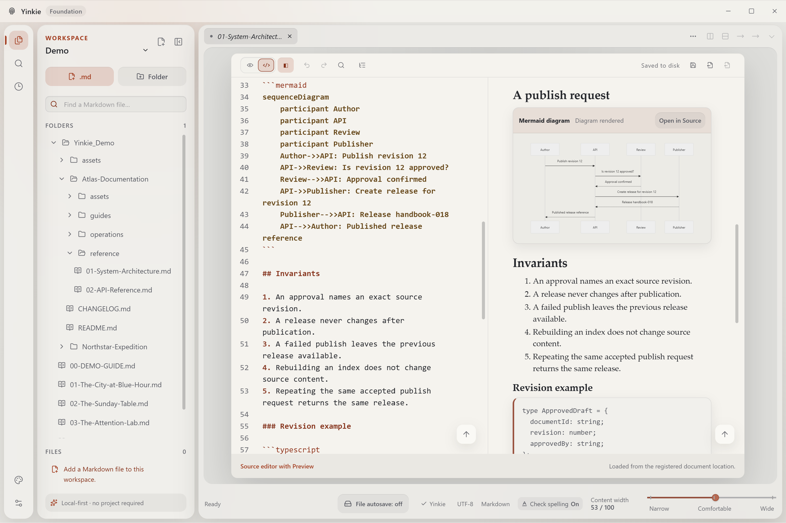
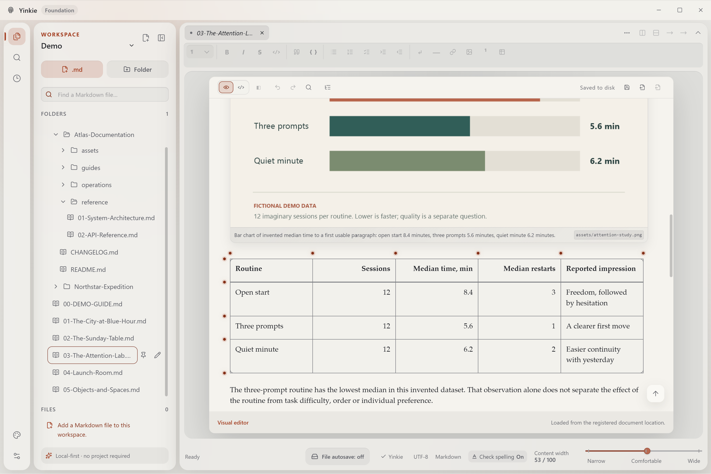
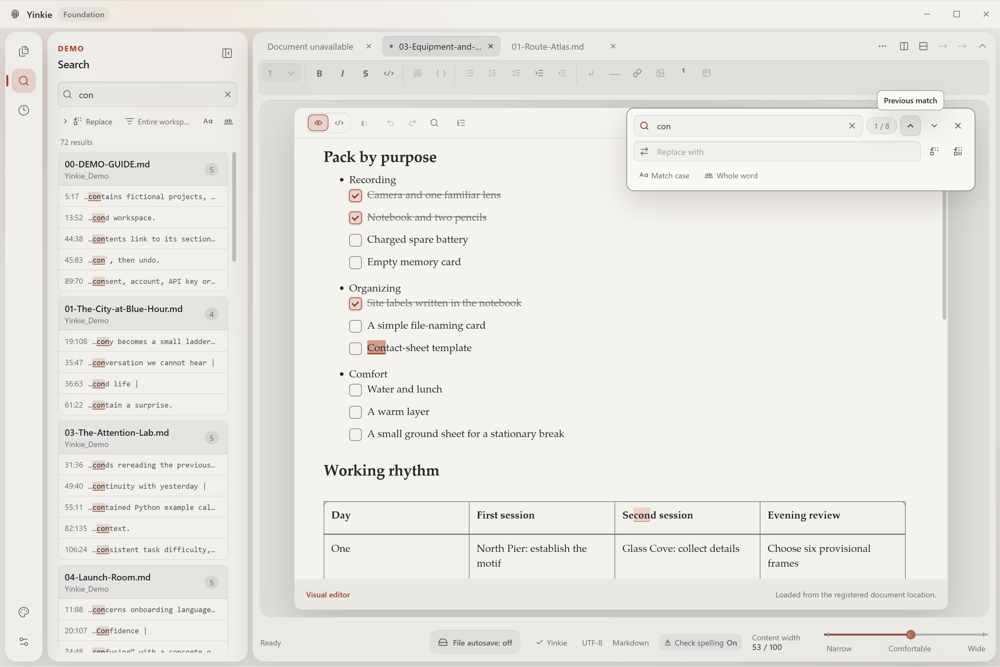
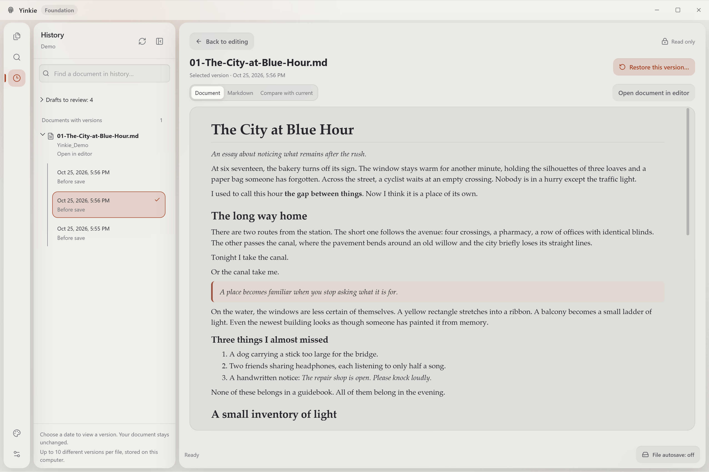

Open several folders at once
Bring documentation, notes and reference files into one workspace without copying or moving them.
THE VISUAL MARKDOWN EDITOR
Format headings, lists and tables directly in your document. Switch to source for precise edits. Save ordinary .md files you can open in other editors.

WHAT YOU CAN DO
Open an existing Markdown file or start a new one. Use it for a checklist, project documentation, research notes or a draft from your AI assistant.
Add headings, links, lists and tables with editing controls. See the formatted document as you work; you do not have to remember the syntax.
Open and save ordinary .md files. Keep them in your own folders and open them in another editor whenever you need to.
Write and save local documents without an internet connection. No account or document upload is needed to edit.
Working with an AI draft? Ask your assistant for a .md file and open it here to revise it. Yinkie does not generate text or send your document to an AI service.
01 / YINKIE DESKTOP
Open several folders and individual files in one Desktop workspace. Put a reference next to your draft and switch between documents with tabs. Your files stay in their original folders.
Bring documentation, notes and reference files into one workspace without copying or moving them.
Split the editor side by side or top and bottom. Keep a brief, checklist or API reference visible while you write.
Use Quick Open to find a file by name, or search for text across the current workspace.

02 / SOURCE EDITING
Switch from visual editing to the underlying Markdown whenever you need to. Open Preview beside the source to check formatting and supported diagrams. Content that cannot be safely edited visually stays available in Source.
Customize keyboard shortcuts in settings. In Source, use multiple cursors to make the same edit in several places at once.

03 / DOCUMENT CONTENT
Make a task list, compare options in a table, add a screenshot to a guide or include a code example. Edit supported elements directly in the document.

04 / SEARCH AND REPLACE
Search text across your current Desktop workspace and jump to a match. Use Find and Replace to update a name or phrase within the open document.

05 / DESKTOP VERSION HISTORY
Open a saved version, read it and compare it with the current file. Restore the version you choose. History is stored locally on your computer.

USING MARKDOWN IN OTHER TOOLS
Choose a Markdown profile for the destination, such as a GitHub README. Yinkie points out syntax outside that profile so you can review it before using the file elsewhere.
5.0
Use Yinkie’s supported Markdown features, with access to the original source.
0.31.2
Standard Markdown for editors that follow CommonMark without extra extensions.
0.29
Formal GFM, including tables, task lists and strikethrough, for tools that support this specification.
Reviewed 2026-08-27
A profile for .md files displayed in GitHub repositories, including GitHub-specific additions.
Choose a profile for an existing file or set the default for new documents. Changing the profile checks compatibility; it does not convert or rewrite your text.
Compatibility covers the selected Markdown syntax and structure. Appearance and editor-specific extensions can still differ.
DESKTOP OR WEB
Both versions edit Markdown visually and in source. Choose Desktop when you need to work across folders or keep local version history.
A Windows app for working with local files, folders and several documents at once.
Available for Windows. Download the installer from the releases page. A macOS build is not available yet.
Open a Markdown file and edit it without installing an app.
File access depends on your browser. When direct saving is unavailable, download a copy. Folder workspaces and Desktop history are not included.
Visual and source editing · Ordinary .md files · No account needed to edit
BETA ACCESS & ACTIVATION
Beta participants will be able to leave their email address and receive an activation code for selected additional features at no charge. After beta, a base edition will be offered, with additional features unlocked by a paid activation key.
Current prices will be published in the Pricing section of this website once payments are connected. The selection of features available without payment may change at our discretion with each update, subject to the Terms of Use and applicable law.
BETA PROGRAM
Early access
Selected additional features
Email → activation code → access to selected beta features.
Try in your browserFAQ
You can write and format headings, lists, links and tables using the visual editor. The file is saved as Markdown. Source mode is available when you want to edit the syntax directly.
No. You can open, edit and save documents without registering.
Opening and editing a local document does not require uploading it to Yinkie. Remote images in a document are loaded only with your explicit permission.
Yes. Your content stays in ordinary Markdown files. Choose CommonMark, GFM or the GitHub repository profile to match the destination you use; Yinkie checks for compatibility issues. Appearance and editor-specific extensions may differ.
Both include visual editing, source editing and preview. Desktop also opens folder workspaces, searches across them and keeps local version history. Web saves through browser file permissions or downloads a copy, and keeps recovery drafts in that browser.
The installed Windows app can open, edit and save local files offline. Internet access is needed to download the app and check for updates. The web editor needs a connection to load; it is not an installable offline app.
Write to support@yinkie.com or use the public GitHub issues. When sharing an example or screenshot publicly, use fictional content and remove personal information.
Start in your browser without registering or installing anything. Download Desktop when you need folder workspaces and local history.